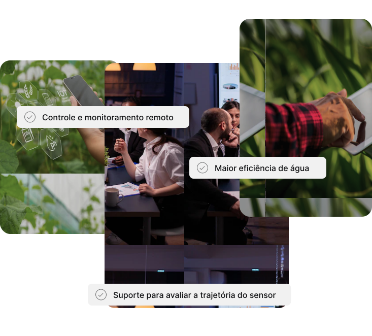

Faça o trabalho funcionar para você

A Tecnosolo organiza e monitora seu plantio de modo tecnológico e rápido, para que você faça o seu trabalho sem precisar sair de casa.

A Tecnosolo organiza e monitora seu plantio de modo tecnológico e rápido, para que você faça o seu trabalho sem precisar sair de casa.
TecnoSolo é o software de gerenciamento de fluxo de trabalho
que possibilita qualquer
colaborador a organizar e controlar
suas atividades em um único local.
Assim, você simplifica e automatiza seus processos sem ajuda
técnica, garantindo resultado de
qualidade.

Melhore seu processo, ganhe eficiência e evite
gastar tempo e dinheiro.

Damos suporte de 24 horas por dia
para nossos clientes.

Automatize etapas manuais de seu processo
para focar no que realmente importa.

Repasse informações de um time para outro
por meio de conexões entre processos.
Somos uma ferramenta para automatizar seus processos de forma inteligente no setor agrícola.
Nossa
missão é revolucionar a agricultura, tornando-a mais sustentável e eficiente a qualidade dos
produtos cultivados. Nosso objetivo é proporcionar lucratividade aos proprietários de
plantações,
ao
mesmo tempo em que contribuamos para a preservação dos recursos hídricos e para o
desenvolvimento de
práticas agrícolas mais responsáveis.
O DHT11 é um sensor de temperatura e umidade amplamente utilizado em projetos de eletrônica e IoT, fornecendo leituras precisas e relativa em um formato simples de integração.
O sensor monitora a umidade relativa do ar em relação à sua capacidade máxima a uma determinada temperatura. É usado para garantir conforto, otimizar processos industriais e monitorar ambientes em aplicações agrícolas e meteorológicas.
Nossa plataforma se concentra em quatro pilares: prevenção de desperdício, suporte integral, conectividade sólida e monitoramento preciso, tudo com o objetivo de evitar o uso excessivo de água e capacitar os agricultores para operar de forma eficiente e sustentável.
A TecnoSolo foi fundada com a visão de revolucionar a forma como a umidade do solo é gerenciada nas plantações, nos concentramos em criar soluções inteligentes que utilizam sensores de umidade, incluindo o renomado DHT11, para monitorar de perto as condições das plantações. Atualmente, nossa principal área de atuação é o cultivo de tomates.
Oferecemos aos agricultores ferramentas avançadas para melhorar o gerenciamento do uso da água, melhorar a qualidade dos produtos cultivados e aumentar a rentabilidade. Através de nossa plataforma inovadora, os clientes têm acesso em tempo real a gráficos detalhados que exibem os dados de umidade de suas plantações. Isso não apenas ajuda a tomar decisões informadas, mas também emite alertas de atenção sempre que a umidade do solo se encontra em níveis críticos,Isso permite que as regras de supervisão sejam controladas apenas quando necessário, economizando água e recursos valiosos.
Estamos abertos com a oportunidade de fazer parte da jornada dos agricultores, ajudando-os a alcançar maior eficiência, lucratividade e sustentabilidade em suas operações agrícolas. A TecnoSolo está comprometida em continuar inovando e liderando o caminho em direção a uma agricultura mais inteligente e responsável.
Aumentar a produtividade e qualidade do seu negócio, tendo uma maior assertividade na irrigação e diminuindo custos gerais.
Transformar as práticas agrícolas ao redor do Brasil.
E-mail:
Mensagem: